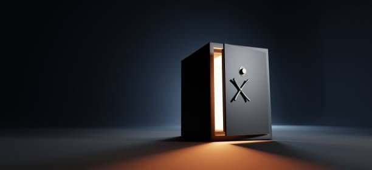

Certains investisseurs souhaitent faire fructifier leur épargne sans prendre de risque sur le capital. Bonne nouvelle : des solutions existent avec des rendements pouvant aller jusqu'à 10 %.
1. Les fonds en euros
La poche garantie en capital des contrats d'assurance-vie. Les fonds en euros offrent une sécurité totale du capital avec des rendements redevenus attractifs grâce à la remontée des taux.
- Capital garanti à tout moment
- Rendements en hausse ces dernières années
- Offres bonus pouvant booster la performance
- Plafond de versement variable selon les assureurs
2. Les produits structurés à capital garanti
Un produit à capital et rendement garantis (hors risque de contrepartie) de 5 à 10 % par an sur un horizon maximum de 12 ans.
- Accessible en assurance-vie, PER et contrat de capitalisation
- Aucun plafond de versement
- Rendement défini à l'avance selon les conditions de marché
- Protection du capital à l'échéance
3. Le Girardin Industriel
Une solution de défiscalisation offrant une réduction d'impôt immédiate supérieure à l'investissement, en contrepartie d'un investissement dans les DOM-TOM avec un impact positif sur l'économie locale.
- Rendement fiscal supérieur à 10 % (ponctuel)
- Éligible aux contribuables souhaitant optimiser leur fiscalité
- Plafond selon l'imposition et le plafond des niches fiscales
Envie d'investir sans risque ?
Je vous aide à identifier les solutions les mieux adaptées à votre situation et vos objectifs. Premier rendez-vous gratuit.
Prendre rendez-vous